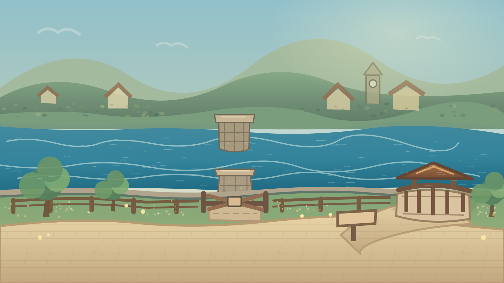

Wondervale S01E02 · Riverside Visual QA
Candidate visual study only — not shipped gameplay. All views come from one geometry-locked R0 v3 vector source; R1 and R2 alter only the camera. The gate stays closed, Milo remains on the public bank, and Market Lane is deliberately absent.

Placeholder caption for art review. Not an E02 game or a voice test.
Source status
Geometry: from R0 v2 same-bank layout. Decorative brush/grain elements are provisional and cannot override route or evidence position. R1 and R2 are not separate invented paintings. The viewer is a standalone offline design inspection, not the Wondervale episode runtime.